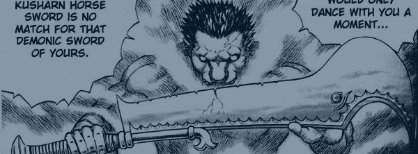

|
|
Zoddo: Human II with Custom Swords
- by Headlong
- scale 1/8
- limitation < 200
- project finished 6.4.07
- estimated value of kit alone: $150+
- pictures uploaded 6.6.07
- painter: John Allred
As some of you
know, the first kit I ever got painted by John Allred is Headlong's
1/10 scale
Zoddo:
Human I. 2 years later, here comes my second Zoddo kit in
his human form, also sculpted by the talented Headlong but
this time at a larger 1/8 scale. Does the sequel live up to the
original? You tell me!
First off, I've said this before, but I'll say it again. The "Reunion on
the Hill of Swords" is one of my favorite scenes in the manga thus far.
Everything about it... the emotions, the symbolism, the struggle...
everything! So whenever there is an opportunity for me to recreate a
scene from it, I go for it! With this particular Zoddo kit, I like
it as is... but I had to add some personal touches to it to really make it
scream the "Reunion on the Hill of Swords." So basically, this customized
version of this kit is portraying the moment in time AFTER Guts
kicks up one of the Hawk swords on the ground and stabs it into
Zoddo's stomach... BEFORE Zoddo grabs his own sword, breaks it
into pieces, and then transforms into his Apostle form!
So of course, the first major customization is the sword sticking
though Zoddo's stomach. By using a dremel, John drilled slits on
the front and back part of Zoddo's body, where the sword would rest
inside of. He then cut the Hawk sword into two pieces, inserted the two
blades, and puttied around it to make it a tight fit.
The customizations done to Zoddo's own sword are subtle, but I
think they make a big difference. The sword originally is very smooth,
with no chips or cracks of any kind. However, I distinctly remember there
being lots of damages to the sword before Zoddo crushes it with his
bare hands. So I gave John the manga scan as reference and he
meticulously made each chip one by one, along with the giant crack on
Zoddo's massive blade. What a cool guy =).
I also asked John to carve a small cut underneath Zoddo's left eye
because if you remember correctly, Guts grazes Zoddo just
barely with his Dragon Slayer as they exchanged swings during their epic
battle. Also, at that moment, Zoddo grazes Guts' forehead
which is why there is blood on his own sword too.
John made the snow base with putty, and carved footprints throughout the
ground. The sword lying flat in front of Zoddo's left foot is the
sword that Zoddo was dual wielding with, when he just barely cuts
Guts (again) as he gets stabbed himself. If you look closely, you
can still see some blood on it!
Most of the blood was done with epoxy and paint. The epoxy substance
is what gives the blood a thicker appearance. John also added a
light clear gloss on various features like the chest and face to make it
appear as Zoddo is sweating. Sexy Zoddo!
Okay okay, so all those small little details are cool, but what's most
important is how Zoddo himself is painted! Seeing how this kit is
a good 1/8 scale (and since Zoddo is bigger than normal humans,
this kit is almost as big as the average 1/6 scale figure) I wanted John
to go crazy with all the detailing. I'm talking about muscles and veins
galore! Basically, I told John that I wanted Zoddo to look like
he's flexing every muscle in his body, with every vein ready to burst, as
he realizes that Guts just kicked a sword through his stomach and
all he could do to him was give him two small cuts (c'mon Zoddo,
can't you do better than that? =P). So, John exaggerated the shading of
the muscles a little more than usual, and really brought out the wrinkles
in Zoddo's face. And as an added bonus, John painted blue-tinted
veins throughout his entire body (legs, arms, neck, back, chest, etc.).
And so now that I've rambled for long enough, here is the buff bastard in
all his glory!.
(note: all pictures by John
Allred, himself)

In-Progress Pictures
Finished Pictures

|